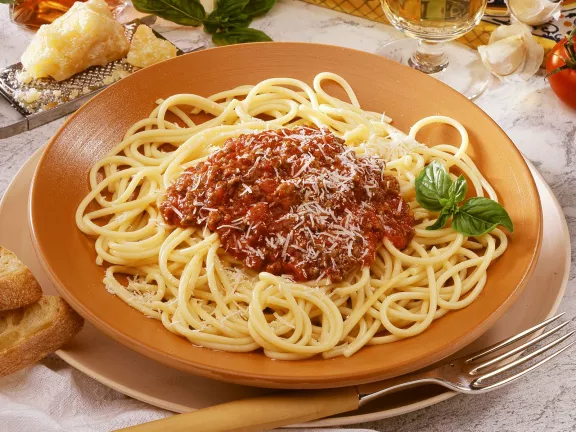

Spaghetti Bolognese
Ein klassisches italienisches Gericht, das schnell und einfach zuzubereiten ist.

Zutaten
| Menge |
Zutat |
| 1 |
Zwiebel |
| 2 |
Knoblauchzehen |
| 50 g |
Rüebli |
| 50 g |
Sellerie |
| 2 EL |
Olivenöl |
| 200 g |
Hackfleisch (Rind) |
| 3 EL |
Tomatenpüree |
| 1 dl |
Rotwein |
| 600 g |
Tomaten |
| 1 |
Zweiglein Rosmarin |
| 1 TL |
Zucker |
| 1 TL |
italienische Kräutermischung |
| 1.5 TL |
Salz |
| wenig |
Pfeffer |
Anleitung
- Zwiebel und Knoblauch schälen, fein hacken.
- Rüebli und Sellerie schälen, in Würfeli schneiden.
- 1 EL Öl in einer beschichteten Bratpfanne warm werden lassen.
- Zwiebel und Knoblauch andämpfen. Rüebli und Sellerie kurz mitdämpfen. Herausnehmen, beiseite
stellen.
- Restliches Öl in derselben Pfanne heiss werden lassen. Fleisch ca. 5 Min. anbraten.
- Tomatenpüree beigeben, kurz mitbraten. Hitze reduzieren, Wein dazugiessen und vollständig
einkochen.
- Tomaten in Würfeli schneiden, mit Rosmarin, Zucker, Kräutermischung und dem beiseite gestellten
Gemüse beigeben.
- Zugedeckt unter gelegentlichem Rühren bei kleiner Hitze ca. 20 Min. köcheln. Rosmarin entfernen,
würzen.